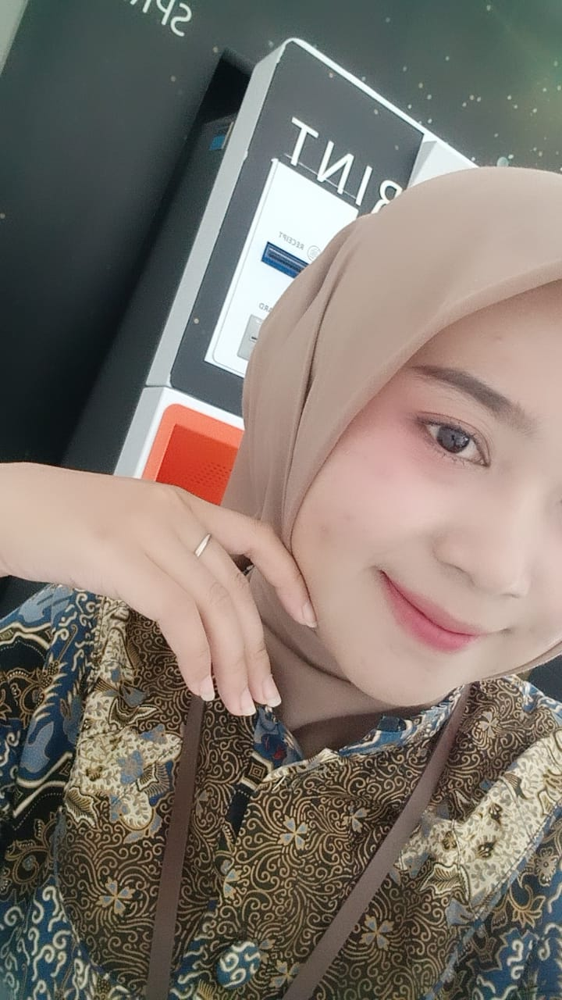

Shape of My Heart
Backstreet Boys
⏮
⏸ PAUSE
⏭
Backstreet Boys
a love letter in bloom
Every petal holds a whisper of how much you mean to me.
SCROLL TO DISCOVER ↓
It lights up every room and every corner of my heart simultaneously.
Rare, genuine, and more beautiful than any flower ever grown.
The way you love the world makes me want to be better every single day.
The most comforting sound, my favourite melody in existence.
You carry so much grace through everything. I admire you endlessly.
Every version of you, every moment – you are more than enough.
captured in time
SKETSA TENTANG DIA
Goresan Rasa dalam Detik yang Tak Berujung
Di antara miliaran pemandangan di semesta, mataku selalu memilih untuk pulang ke satu arah. Bagiku, potret wajahmu adalah sebuah keindahan murni yang tak pernah bosan untuk aku kagumi, tempat di mana seluruh duniaku mendadak terasa begitu tenang dan sempurna.
Semua kepingan rasa dan cerita tentang indahnya dirimu telah aku simpan rapi di dalam folder ini. Biarlah lembaran tersembunyi ini menjadi saksi betapa berharganya dirimu bagi duniaku.

always & forever
No matter where life takes us, know that somewhere in the universe, there is a garden blooming with every feeling I have ever held for you. You deserve the world.
Made with love, just for you 🌸